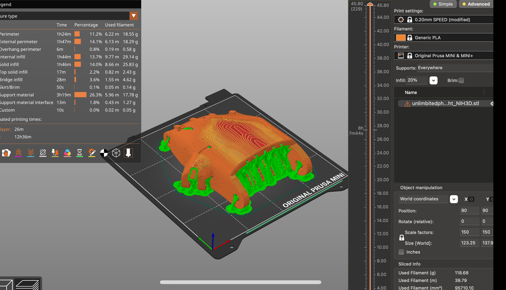

Signed Up!
Here is where I signed up to the e-nable platform and located the file for the prosthetic hand. I searched for 'Phoenix Hand V3' and successfully accessed the file containing all the necessary components.
Downloading UnLimbited Hand:
Setup and Print
Standard Print Settings + Supports Enabled. Approximately 13 hours.
A Review of Documentation
After review of both forms of documentation, I cannot definitively say that I prefer one over the other. I should mention, however, that I believe these forms of documentation work well for different things. That is, if you’re struggling with one type of instruction, you can switch over to the other and usually get your problem resolved, whatever that may be. The video, for example, was very helpful in that I could see exactly what I had to do, and how I needed to guide my hands toward accomplishing that goal. The downside of the video, however, was that we could never move as fast as the video was moving. At first, we put the video at two times speed, which certainly did not help. After about 5 minutes, we disabled 2 times speed and even then the video was still moving too fast. This type of documentation requires that you pause repeatedly or rewind as you go through the steps, which may be frustrating for some people. Alternatively, the pdf manual was very easy to move through, and does not require for you to “pause” or “rewind”. The only problem with the manual is that, by virtue of being a static form of documentation, if you ever get to a part that you’re struggling with, it can be difficult to troubleshoot and resolve whatever issue you are having. Perhaps a way to make things easier would be to combine these two forms of documentation. I propose that there be a manual that is primarily in written form, but for parts that people are known to have problems with, embed a video clip into that goes over that common problem. I would’ve liked to have this type for the tensioner portion of the hand assembly, which my partner and I found particularly difficult.
Watching Video:
Online Instructions / Static Documentation:
Assembling Our Prosthetic
Overall, the process of assembling this hand was relatively simple. Something that facilitated assembly was the practice of mise en place. After organizing the 3D printed parts by size and shape, it was very easy to locate the necessary part for any particular step. One part that we struggled doing this with, however, was the fingers of our print. The video seemed to imply that the fingers had different lengths. although the majority of our finger parts looked as if they were the same length. Eventually, we were able to identify the longest and shortest digits, although it took some very careful inspection. The second issue we faced was regarding the tensioner strings. The reason for our confusion seemed to stem from the fact that we were now handling bits of string, which was a very different process just connecting two plastic bits together (which was the majority of the build). More specifically, the issue we had with the tensioner strings was tying them securely to the prosthetic. Even after we had tied the tensioner strings we had to make sure that there wasn’t too much slack, because if there was we’d have to undo them, cut them, then retie them so there was sufficient tension in the string. If I were designing this I’d provide additional instruction for the length of the string. Overall, the build process was not too bad, and I cannot say we had very much trouble at all finding the relevant files to print and assemble this hand.
Mise en Place:

Assembly:
Hypothetical Modificatiions
One problem I’d like to resolve is the issue of reading at night. Now, wouldn’t it be nice if you didn’t have to rely on a tenuously attached lamp sticking out over the page like an anglerfish’s lure? I think the addition of a light-emitting, ramp-like apparatus by the bottom of the palm of the prosthetic could forever resolve this issue. The inclination of this light ramp, can be adjusted to the users liking, with the additional functionalities of allowing the user to adjust light warmth and brightness. The angle of this ramp can be adjusted via a click-in-place mechanism with 3 inclination settings. The light warmth and brightness can be adjusted using two buttons that can be pressed repeatedly to arrive at one’s desired setting. Lastly, the light is powered by a coin battery that sits on top of the “wrist” of the prosthetic.
A Picture of How it Would Work:
Some Concluding Thoughts
Considering my insights from the assembly process, I now understand the importance of clear and detailed instructions that can help people with different levels of experience. These user-friendly guidelines not only make it easier for beginners to follow along but also allow more experienced individuals to explore the task in greater depth, building their skills and confidence. Not only this, I have learned that engineering with empathy involves designing solutions that consider the diverse needs and experiences of users, ensuring that technological advancements are not just functional but also genuinely improve people's lives.
Movement: